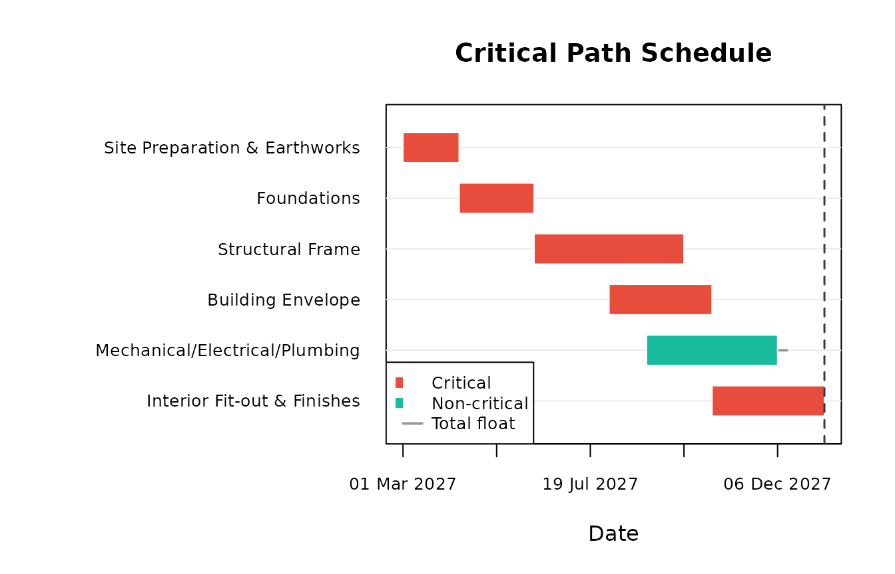
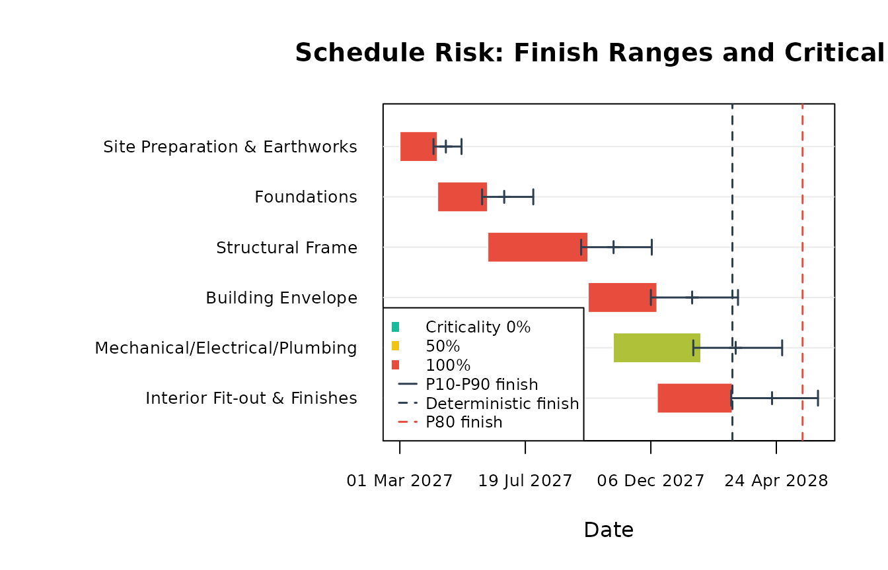
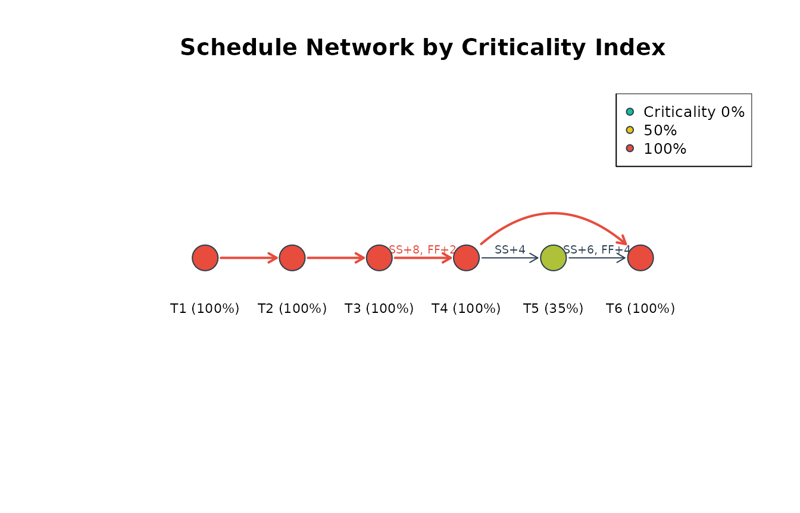
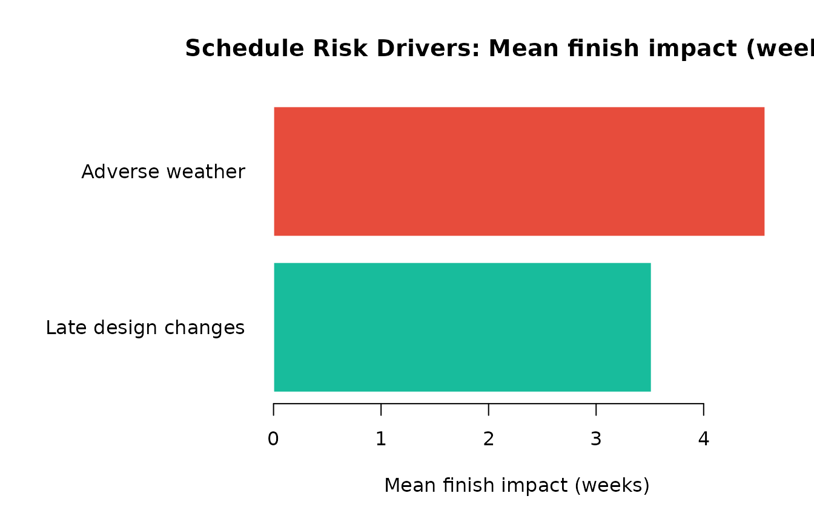

Critical Path and Schedule Risk Analysis of Resource-Loaded Schedules
Source:vignettes/schedule-risk.Rmd
schedule-risk.Rmd
library(PRA)
# 10,000 iterations locally; fewer on CRAN so the vignette builds quickly.
n_sims <- if (nzchar(Sys.getenv("NOT_CRAN"))) 10000L else 1000L
n_lev <- if (nzchar(Sys.getenv("NOT_CRAN"))) 5000L else 500Lmcs() treats a project as the sum of
its task durations. That is exact for a single chain of tasks, but real
schedules have parallel paths, overlapping work and shared crews. Where
paths merge, the finish is set by whichever path runs longest in that
iteration. This merge bias makes the expected finish later than
any single path suggests, even when every estimate is symmetric. A
shared resource can also hold an activity back after its predecessors
are done.
PRA’s schedule functions analyze the network itself:
| Function | Does |
|---|---|
project_schedule() |
Validates activities, links, duration distributions, resources, assignments and risk events |
cpm() |
Deterministic critical path method, optionally resource-leveled |
sra() |
Monte Carlo schedule risk analysis: reruns CPM in every iteration |
All three results have print(), summary()
and plot() methods.
Why not just add up durations?
Two 10-week activities run in parallel, each with a symmetric triangular estimate of 8 to 12 weeks. On paper the project takes 10 weeks.
parallel <- project_schedule(
activities = data.frame(id = c("Start", "X", "Y", "Finish"),
duration = c(0, 10, 10, 0)),
links = data.frame(source = c("Start", "Start", "X", "Y"),
target = c("X", "Y", "Finish", "Finish")),
duration_dists = list(
X = list(type = "triangular", a = 8, b = 10, c = 12),
Y = list(type = "triangular", a = 8, b = 10, c = 12)
),
time_unit = "weeks"
)
set.seed(1)
par_risk <- sra(parallel, n_sims)
par_risk$prob_deterministic
#> [1] 0.2527
par_risk$total_mean
#> [1] 10.46753The 10-week plan has only about a one-in-four chance of being met. A task-sum model of either path would put it at one in two.
The building project schedule
building_project includes a resource-loaded schedule for
the six work packages of a mid-rise building, in weeks:
bp <- building_project
bp$schedule_activities
#> id name duration fixed_cost
#> 1 T1 Site Preparation & Earthworks 6 200000
#> 2 T2 Foundations 8 600000
#> 3 T3 Structural Frame 16 1600000
#> 4 T4 Building Envelope 11 1100000
#> 5 T5 Mechanical/Electrical/Plumbing 14 1200000
#> 6 T6 Interior Fit-out & Finishes NA 500000
bp$schedule_links
#> source target type lag
#> 1 T1 T2 FS 0
#> 2 T2 T3 FS 0
#> 3 T3 T4 SS 8
#> 4 T3 T4 FF 2
#> 5 T4 T5 SS 4
#> 6 T4 T6 FS 0
#> 7 T5 T6 SS 6
#> 8 T5 T6 FF 4The envelope (T4) starts 8 weeks into the structural frame (start-to-start) and finishes at least 2 weeks after it (finish-to-finish). MEP rough-in starts 4 weeks into the envelope. Fit-out follows envelope dry-in and must finish at least 4 weeks after MEP. Fit-out has no duration of its own: it is 24 crew-weeks of work by two finishing crews, so its duration depends on crew productivity.
bp$schedule_resources
#> id capacity rate
#> 1 Excavation crew 1 18000
#> 2 Concrete crew 1 22000
#> 3 Steel erector 1 30000
#> 4 Tower crane 1 12000
#> 5 MEP subcontractor 2 35000
#> 6 Finishing crew 3 20000
bp$schedule_assignments
#> activity resource units work
#> 1 T1 Excavation crew 1 NA
#> 2 T2 Excavation crew 1 NA
#> 3 T2 Concrete crew 1 NA
#> 4 T3 Concrete crew 1 NA
#> 5 T3 Steel erector 1 NA
#> 6 T3 Tower crane 1 NA
#> 7 T2 Tower crane 1 NA
#> 8 T4 Tower crane 1 NA
#> 9 T4 MEP subcontractor 1 NA
#> 10 T5 MEP subcontractor 1 NA
#> 11 T5 Finishing crew 1 NA
#> 12 T6 Finishing crew 2 24A single tower crane serves the foundations, frame and envelope. Each
resource’s rate is its cost per unit per week, and
fixed_cost carries materials and lump sums.
proj <- project_schedule(
activities = bp$schedule_activities,
links = bp$schedule_links,
duration_dists = bp$duration_dists,
resources = bp$schedule_resources,
productivity_dists = bp$productivity_dists,
assignments = bp$schedule_assignments,
risks = bp$risk_register,
cor_mat = bp$cor_mat[1:5, 1:5],
start_date = bp$start_date,
time_unit = "weeks"
)
proj
#> Project Schedule
#> Activities: 6 Links: 8 Resources: 6 Risks: 2
#> Time unit: weeks Start: 2027-03-01
#>
#> id name duration driver predecessors
#> T1 Site Preparation & Earthworks 6 distribution
#> T2 Foundations 8 distribution T1
#> T3 Structural Frame 16 distribution T2
#> T4 Building Envelope 11 distribution T3SS+8, T3FF+2
#> T5 Mechanical/Electrical/Plumbing 14 distribution T4SS+4
#> T6 Interior Fit-out & Finishes 12 resource T4, T5SS+6, T5FF+4
plot(proj)
Activity-on-node network. Red marks the deterministic critical path; edge labels give non-FS link types and lags.
Deterministic critical path
plan <- cpm(proj)
plan
#> Critical Path Method
#> Project finish: 45 weeks
#> Critical path: T1 -> T2 -> T3 -> T4 -> T6
#>
#> id duration ES EF LS LF total_float free_float critical
#> T1 6 0 6 0 6 0 0 TRUE
#> T2 8 6 14 6 14 0 0 TRUE
#> T3 16 14 30 14 30 0 0 TRUE
#> T4 11 22 33 22 33 0 0 TRUE
#> T5 14 26 40 27 41 1 1 FALSE
#> T6 12 33 45 33 45 0 0 TRUEThe forward pass gives each activity’s early start: the latest of zero and the constraint of each incoming link. FS gives predecessor finish + lag, SS gives predecessor start + lag, FF gives predecessor finish + lag − duration, and SF gives predecessor start + lag − duration. The backward pass mirrors this from the project finish. Total float is late start minus early start. Free float is the slip an activity can absorb before it delays any successor.
plot(plan)
Deterministic schedule. Grey bars show total float; the dashed line is the project finish.
Resource leveling
The baseline overlaps the envelope with the frame, but both need the
one crane. level = TRUE schedules activities with a serial
schedule-generation scheme. It repeatedly takes the eligible activity
with the smallest late start and places it at the earliest time that
satisfies its links and keeps every resource within capacity for the
activity’s whole duration.
leveled <- cpm(proj, level = TRUE)
leveled$finish - plan$finish
#> [1] 8
plot(leveled)
Resource-leveled schedule: the envelope waits for the crane.
The crane conflict costs eight weeks. Under leveling, criticality comes from the driving path. It traces back from the finish through binding links and through resource hand-offs, because float has no meaning once resources move dates.
Schedule risk analysis
sra() samples durations, crew productivity and risk
events, then reschedules the network in every iteration. Here the crane
constraint is respected throughout:
set.seed(2027)
risk <- sra(proj, num_sims = n_lev, level = TRUE)
risk
#> Schedule Risk Analysis (resource-leveled)
#> Iterations: 5,000
#> Deterministic finish: 53 weeks (P11)
#> Mean finish: 59.56 weeks SD: 5.364
#> Finish percentiles:
#> 10% 50% 80% 90%
#> 52.82 59.31 64.19 66.64
#> Cost percentiles:
#> 10% 50% 80% 90%
#> 8450000 8926000 9339000 9578000
#> Most critical activities:
#> id criticality cruciality
#> T1 1 0.601
#> T2 1 0.658
#> T3 1 0.706
#> T4 1 0.562
#> T6 1 0.114

Project finish: histogram and cumulative probability.
The leveled deterministic plan sits low on the cumulative curve. The gap reflects correlated, right-skewed durations, uncertain crew productivity and the two risk events. Contingency follows directly:
contingency(risk, phigh = 0.80, pbase = 0.50)
#> 80%
#> 4.871851Which activities drive the finish?
summary(risk)$activities
#> id mean_duration mean_finish finish_p90 criticality sensitivity cruciality
#> 3 T3 17.346264 34.29191 40.150880 1.0000 0.7060928 0.7060928
#> 2 T2 9.458494 16.94564 21.266625 1.0000 0.6584114 0.6584114
#> 1 T1 7.487150 7.48715 9.833112 1.0000 0.6009286 0.6009286
#> 4 T4 12.476563 46.76847 53.891276 1.0000 0.5615552 0.5615552
#> 5 T5 15.453993 53.74590 60.927939 0.3482 0.4449984 0.1549484
#> 6 T6 12.362478 59.55973 66.638516 1.0000 0.1138562 0.1138562
#> ssi
#> 3 0.4661365
#> 2 0.3188466
#> 1 0.3184848
#> 4 0.4200244
#> 5 0.1685860
#> 6 0.1579801- The criticality index is the share of iterations in which the activity is critical.
- Sensitivity is the Spearman rank correlation between the activity’s duration and the project finish.
- The cruciality index is criticality × sensitivity (Williams, 1992). It ranks activities by how much they actually move the finish. An activity that is always critical but never varies has a cruciality of zero.
- The schedule sensitivity index (SSI) is criticality × sd(duration) / sd(finish) (PMI, 2009).
plot(risk, type = "gantt")
Deterministic bars shaded by criticality index, with P10-P90 finish whiskers and P50 ticks.
plot(risk, type = "tornado")
Activities ranked by cruciality.
plot(risk, type = "network")
Network shaded by criticality index.
Risk events
Each risk in the register occurs independently in each iteration with its stated probability. When it occurs, a sampled delay is added to every activity it affects, and its cost impact is added to project cost.
risk$risk_stats
#> id prob occurrence finish_impact cost_impact rank
#> 1 Adverse weather 0.35 0.3520 4.572095 262732.7 1
#> 2 Late design changes 0.25 0.2432 3.515081 642740.6 2finish_impact is the mean finish in iterations where the
risk occurred minus the mean where it did not. cost_impact
is the same difference in total cost, so it includes the extra resource
cost of the delay as well as the risk’s own cost. Rank risk responses by
these impacts:
plot(risk, type = "tornado", metric = "risk")
Risk events ranked by mean finish impact.
Cost and resources over time
Each activity’s cost is its resource cost
(units × rate × duration) plus fixed cost plus its share of
risk costs. It is spread over the activity’s dates and accumulated into
a cost S-curve band:
plot(risk, type = "cost")
Cumulative cost: P50 line and P10-P90 band.
risk$cost_percentiles
#> 10% 50% 80% 90%
#> 8450214 8926197 9338805 9577579Resource usage is summarized the same way. With leveling, no iteration exceeds capacity:
plot(risk, type = "resources")
Resource usage against capacity.
What does the crane constraint cost?
Comparing the leveled analysis with an unconstrained one prices the resource constraint in probabilistic terms:
set.seed(2027)
free <- sra(proj, num_sims = n_sims)
rbind(
unconstrained = free$percentiles,
leveled = risk$percentiles
)
#> 10% 50% 80% 90%
#> unconstrained 45.53820 50.58434 54.33120 56.28304
#> leveled 52.81628 59.31473 64.18658 66.63852With a single crane, the P80 finish moves from 54.3 to 64.2 weeks. That is the figure to weigh against the cost of a second crane.
Notes and limitations
- Time is in abstract units from a common start. A
start_datewithtime_unit = "days"or"weeks"labels plot axes in calendar dates. Working calendars and date constraints are not modelled. - Duration correlation uses the same Gaussian copula as
mcs(), and every marginal distribution is preserved. Productivity draws and risk events are independent. - Sampled durations are truncated at zero.
- Leveling uses one priority rule. It is a realistic heuristic, not an optimizer, and it schedules each iteration separately, so it is slower than unleveled analysis on large networks.
References
Kelley, J. E., and Walker, M. R. (1959). Critical-path planning and scheduling. Proceedings of the Eastern Joint Computer Conference, 160–173.
Kolisch, R. (1996). Serial and parallel resource-constrained project scheduling methods revisited: Theory and computation. European Journal of Operational Research, 90(2), 320–333.
Project Management Institute (2009). Practice Standard for Project Risk Management. PMI.
Williams, T. M. (1992). Criticality in stochastic networks. Journal of the Operational Research Society, 43(4), 353–357.